道具
招式光碟
 招式光碟（取代招式學習器）：依屬性與階級劃分的招式池、掉落機率。
招式光碟（取代招式學習器）：依屬性與階級劃分的招式池、掉落機率。
道具
暖灰 解毒藥
解毒藥 解眠藥珠珠郵件絲線
解眠藥珠珠郵件絲線 黑色眼鏡藍色玻璃哨藍色頭巾藍色碎片
黑色眼鏡藍色玻璃哨藍色頭巾藍色碎片 光粉鳥羽綺麗羽毛
光粉鳥羽綺麗羽毛 灼傷藥特攻增強劑空殼速度增強劑木炭講究頭帶潔淨之符
灼傷藥特攻增強劑空殼速度增強劑木炭講究頭帶潔淨之符 要害攻擊
要害攻擊 龍之牙龍之鱗片夢境郵件
龍之牙龍之鱗片夢境郵件 學習裝置華麗郵件
學習裝置華麗郵件 氣勢頭帶美味之水
氣勢頭帶美味之水 萬靈藥
萬靈藥 能力防守
能力防守 硬石頭
硬石頭 心之鱗片ＨＰ增強劑
心之鱗片ＨＰ增強劑 厲害傷藥
厲害傷藥 粗寶石夢之結晶釜炎仙貝悠閒薰香
粗寶石夢之結晶釜炎仙貝悠閒薰香 吃剩的東西果汁牛奶
吃剩的東西果汁牛奶 黏液電氣球幸運蛋吉利拳強制鍛鍊器熔岩增幅器
黏液電氣球幸運蛋吉利拳強制鍛鍊器熔岩增幅器 黃金噴霧活力塊
黃金噴霧活力塊 奇跡種子哞哞鮮奶
奇跡種子哞哞鮮奶 不融冰金珠
不融冰金珠 岩石碎片用過的繃帶粉紅頭巾
岩石碎片用過的繃帶粉紅頭巾 毒針皮皮玩偶
毒針皮皮玩偶 SP極限提升劑SP提升劑
SP極限提升劑SP提升劑 神奇糖果銳利之爪
神奇糖果銳利之爪 活力碎片
活力碎片 焦點鏡焦點鏡 Lv2
焦點鏡焦點鏡 Lv2 海潮薰香金粉
海潮薰香金粉 翅粉
翅粉 靜電碎片暗影郵件
靜電碎片暗影郵件 銳利鳥嘴
銳利鳥嘴 絲綢圍巾
絲綢圍巾 銀粉閃耀鱗片
銀粉閃耀鱗片 魚鱗煙霧球勁爽汽水
魚鱗煙霧球勁爽汽水 柔軟沙子
柔軟沙子 詛咒之符星星碎片星星沙子大蔥日之石
詛咒之符星星碎片星星沙子大蔥日之石 利牙粗骨頭
利牙粗骨頭 命中強化
命中強化 防禦強化
防禦強化 特攻強化
特攻強化 速度強化黃色玻璃哨黃色頭巾黃色碎片特防增強劑
速度強化黃色玻璃哨黃色頭巾黃色碎片特防增強劑
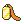
護符金幣解毒藥解眠藥珠珠郵件絲線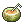
樹果汁大蘑菇大珍珠黑帶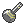
黑色玻璃哨黑色眼鏡藍色玻璃哨藍色頭巾藍色碎片光粉鳥羽綺麗羽毛灼傷藥特攻增強劑空殼速度增強劑木炭講究頭帶潔淨之符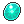
覺醒之石深海鱗片深海之牙要害攻擊龍之牙龍之鱗片夢境郵件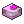
可疑修正檔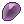
暗之石電力增幅器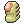
ＰＰ多項小補劑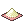
元氣粉元氣根離洞繩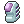
ＰＰ單項小補劑不變之石學習裝置華麗郵件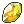
火之石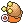
向尾喵的尾巴氣勢頭帶美味之水萬靈藥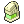
全復藥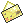
閃亮郵件綠色頭巾綠色碎片能力防守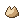
毛束港口郵件硬石頭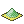
萬能粉心之鱗片ＨＰ增強劑厲害傷藥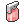
解凍藥防禦增強劑舊布花瓣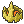
王者之證冰晶粗寶石夢之結晶釜炎仙貝悠閒薰香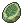
葉之石吃剩的東西果汁牛奶黏液電氣球幸運蛋吉利拳強制鍛鍊器熔岩增幅器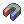
磁鐵奇異珠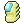
ＰＰ多項全補劑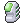
ＰＰ單項全補劑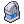
全滿藥黃金噴霧活力塊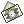
機械郵件心靈香草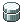
金屬膜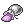
金屬粉奇跡種子哞哞鮮奶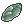
月之石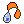
神秘水滴不融冰金珠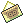
橘子郵件渾圓之石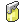
解麻藥珍珠岩石碎片用過的繃帶粉紅頭巾毒針皮皮玩偶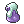
傷藥SP極限提升劑SP提升劑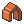
護具攻擊增強劑先制之爪神奇糖果銳利之爪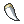
銳利之牙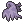
靈界之布紅色玻璃哨紅色頭巾紅色碎片除蟲噴霧復古郵件復活草活力碎片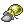
聖灰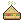
三明治焦點鏡焦點鏡 Lv2海潮薰香金粉翅粉靜電碎片暗影郵件銳利鳥嘴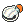
貝殼之鈴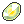
光之石淺灘海鹽淺灘貝殼絲綢圍巾銀粉閃耀鱗片魚鱗煙霧球勁爽汽水柔軟沙子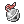
安撫之鈴心之水滴詛咒之符星星碎片星星沙子大蔥日之石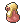
好傷藥白銀噴霧小尖牙利牙粗骨頭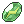
雷之石小蘑菇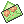
熱帶郵件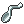
彎曲的湯匙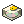
升級資料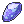
水之石波浪郵件白色玻璃哨白色香草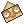
木紋郵件命中強化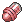
力量強化防禦強化特攻強化速度強化黃色玻璃哨黃色頭巾黃色碎片特防增強劑精靈球


樹果袋


重要物品

超級石
10 顆對應的石頭 + 一隻 Lv 150 寶可夢 = 永久超級進化。 寶可夢戰爭 與 世界頭目 獎勵（有機率），可交換。


依野生寶可夢等級掉落
適用於每一個種類，依被擊敗的野生寶可夢等級而定。